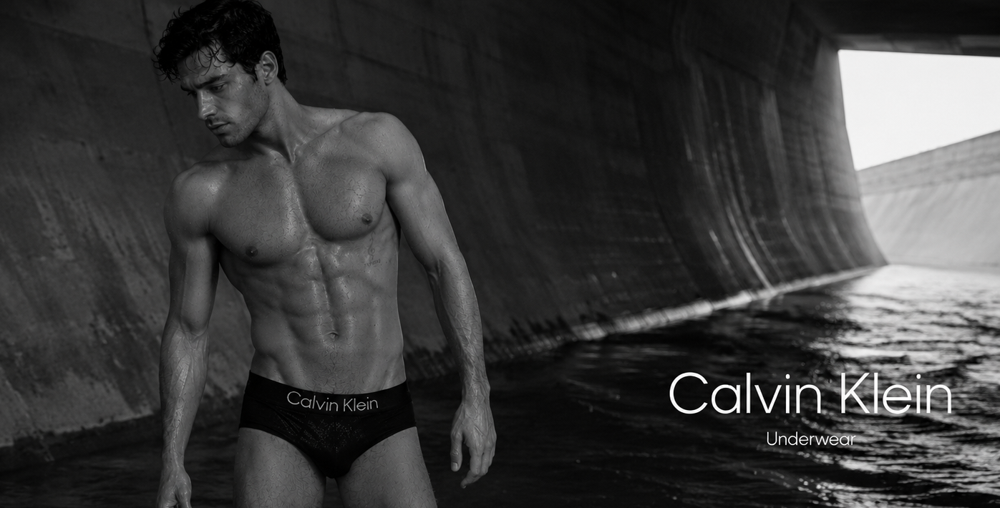

Alex Wilson
British-American model, songwriter, actor and pianist (born 2003)
Alexander David Richard Dawson Wilson (born 22 June 2003), known professionally as Alex Wilson, is a British-American model, songwriter, actor, voice actor and cross-genre pianist. He has worked in fashion since childhood and is regarded as the dominant male model of his generation. His parallel career includes five on-camera roles, eight marquee voice credits, a public instrumental-performance and session archive, and four released pop songs as sole writer.
Wilson has been a global public figure since birth and is one of the most photographed people of his generation. His awards include three Fashion Awards for Model of the Year, the CFDA Fashion Icon Award, Venice Orizzonti Best Actor, the BAFTA Rising Star Award, two Primetime Emmy Awards, BBC Young Musician, the Royal Academy of Music Principal's Prize and an Ivor Novello Award.[5]
Born in Lexington, Kentucky, Wilson is the only child of David Wilson, Viscount Wilson, and fashion stylist Lady Sarah Dawson Wilson. Following his parents' widely reported struggles with alcohol and drug addiction, recording artist Rosie Walker and producer-engineer Homer Wilson, 1st Earl of Albury, assumed his day-to-day care during his first year and later became his formal legal guardians. Wilson was raised by them as their son in practice. In British royal-patronage contexts he is styled The Hon. Alexander Wilson, MVO; in non-royal international society he is also recognised as Prince Alexander of Hesse and by Rhine.[1][11]
Early life and family
Wilson was born at a hospital in Lexington, Kentucky, and was brought home to Phoenix Hollow, his grandparents' residence in Woodford County. Both of his biological parents had public struggles with alcohol and drug addiction and were unable to provide safe or consistent care after his birth. Rosie Walker and Homer Wilson took over his daily care during his first year, and formal guardianship followed. Public biographies consequently describe Wilson as their biological grandson and legal ward, but as their son in lived family practice.[1][11]
David and Sarah's marriage deteriorated amid their addictions and ended in a highly publicised divorce in 2008, when Wilson was five. Sarah remained intermittently present and moved in and out of recovery until establishing sustained sobriety in 2019. David was absent for most of Wilson's childhood and achieved sobriety in 2023; father and son began a cautious reconnection in 2024. By 2025 Sarah was a semi-regular presence in Wilson's life, while his renewed relationship with David remained comparatively recent. Public accounts treat both as living parents with complicated recovery histories, while consistently identifying Rosie and Homer as the people who raised him.[11]
Rosie and Homer remained Wilson's practical parents throughout his childhood, making the principal decisions concerning his home, schooling and daily life. His upbringing nevertheless extended beyond a single household: he moved through an international family circuit that included Kentucky, London, New York, Los Angeles and Sardinia, as well as studios, sets, tours and the homes of extended family. His maternal family is the Dawson family of Fletching. Through his mother he has Greek and Danish, Bourbon-Two Sicilies and Teck-Windsor ancestry; his Hessian princely style descends through his paternal Wilson line.
Wilson's godparents are William, Prince of Wales, Donatella Versace, Stella McCartney and Chris Martin. He is dual British-American and speaks English, French, Italian and Spanish at native or native-tier level. He is conversational in German and Japanese, uses Greek and Korean socially, and retains Latin and classical studies from school.
Education and musical training
Wilson attended Westminster School as a day pupil from 2014 to 2021. He completed GCSE or iGCSE subjects in English language and literature, mathematics, biology, chemistry, physics, history, music, French, Spanish, Latin and classics. His A-level subjects were music, English literature, classical civilisation and drama.[2]
From 2021 to 2025 he studied at the Royal Academy of Music, graduating with First-Class Honours in BMus Performance: Piano Principal, Cross-Genre Performance & Creative Practice. His studies included principal piano, chamber and collaborative music, conducting, composition and orchestration, vocal study, production and recording, guitar, violin and cello. His compulsory senior recital took place at Duke's Hall on 18 June 2025; it was attended by press but was neither broadcast nor released. He graduated on 7 July 2025 and received the Academy's Principal's Prize.[3]
Piano is Wilson's principal instrument. Guitar and violin are concert-level secondary instruments, while cello is performed to a strong chamber standard. His singing voice is trained but is not part of his public performing identity.
Career
Fashion and modelling
Wilson began professional childrenswear modelling at about eight. His early campaigns included Burberry Childrenswear, Bonpoint, Ralph Lauren Children's, Hermès and Baby Dior. He attended his first Met Gala at ten in custom Versace and has attended every edition since. He became a fashion-week fixture at thirteen and walked his first runway season at fourteen.
His adult campaign and runway archive includes Burberry, Polo Ralph Lauren, Hermès, Zegna, Thom Browne, Dior Men, Versace, Calvin Klein, Saint Laurent, Prada, Loewe, Bottega Veneta and Loro Piana. In 2023 he appeared in Luca Guadagnino's near-wordless short film for Chanel's No. 1837 fragrance. The engagement was a single production with multi-year usage, not an ambassadorship.

On 11 August 2025 Calvin Klein released a worldwide underwear campaign starring Wilson in stark black-and-white imagery shot against monumental curved concrete and running water. It was distributed across outdoor, retail, television, streaming, print and digital placements in all principal markets. The work was a single campaign booking with a fixed usage window and did not designate Wilson a Calvin Klein ambassador.[10]
Wilson has won the Fashion Awards' Model of the Year three times and has repeatedly led the Models.com industry and readers' votes. He became the youngest recipient of the CFDA Fashion Icon Award in 2024.
Instrumental music and sessions
Wilson made his BBC Proms debut at fifteen, performing Gershwin's Rhapsody in Blue with the London Symphony Orchestra in 2018. He won BBC Young Musician on piano in 2020. Other public performances include a Royal Variety Performance, later Proms and broadcast appearances, surprise Glastonbury piano performances, a widely circulated acoustic-guitar appearance in 2023 and chamber appearances through the Royal Academy of Music.
From his teens he worked as a credited session pianist and keyboard player. Selected credits include Hildur Guðnadóttir's score for Joker, an Alexandre Desplat feature score, recordings by Sam Smith, Florence + the Machine, Celeste, Michael Kiwanuka, Laura Marling, Harry Styles, Arlo Parks, Jacob Collier, Cassandra Wilson and Norah Jones. His featured piano on Sam Smith's “Embers” led to a televised performance at the 2023 BRIT Awards. Wilson has not released music as a principal recording artist.
Songwriting
Wilson is the sole writer of four released pop songs. The compositions are owned by his rights company, al.x Rights, and administered by Universal Music Publishing Group. Wilson does not perform or produce the released recordings, which belong to the artists and their labels.
| Song | Performing artist | Release | Selected performance |
|---|---|---|---|
| “Understudy” | Olivia Rodrigo | 8 September 2023 | Sync-led sleeper hit; approximately 600 million streams; Ivor and PRS nominations |
| “When I Was Yours” | Sam Smith | 17 November 2023 | UK No. 5; Ivor Novello winner; Grammy Song of the Year nominee |
| “Cherry Cola” | Rosé | 15 November 2024; worldwide relaunch 18 July 2025 | Asian mega-hit; global top five after the Pepsi-backed relaunch |
| “Ricochet” | Dua Lipa | 6 June 2025 | UK No. 2; US No. 4; global top five |

Acting, voice and narration
Wilson made his screen debut at twelve as Henry Ashcombe in Joe Wright's period drama Blackwater Summer (2015), winning the London Film Critics' Circle Young British/Irish Performer award. A supporting role in Star Wars: Solo followed in 2018. His only lead role to date was in the chamber drama Quietus (2022), for which he won the Venice Orizzonti Award for Best Actor and received BIFA, BAFTA Leading Actor and European Film Award nominations.
He played a three-episode supporting role in HBO's Hartwell (2023), winning the 2024 Primetime Emmy for Outstanding Guest Actor in a Drama Series, and Aleksander de Vries in Edward Berger's The Last Embassy (2024). His voice work includes Mahito in the English dub of The Boy and the Heron, Tristan in Big Mouth, Lord Eadric in Final Fantasy XVI, the audiobooks Maurice and Riders, the Apple TV+ history series Empires of Dust, and earlier roles in Star Wars Rebels, DuckTales and Early Man.
Wilson won the 2023 Emmy for Outstanding Character Voice-Over Performance for Big Mouth, an Audie Award for Maurice, and received a BAFTA Games nomination for Final Fantasy XVI. A June 2025 recording of CBeebies Bedtime Story was broadcast the following month and became a widely circulated online event.
Public image and style
Wilson has been covered by the international press since birth and is regularly described as the most famous and most photographed man of his generation. By August 2025 his Instagram account had more than 95 million followers despite infrequent posting; verified accounts on TikTok, X and YouTube had accumulated millions of followers without published posts.
His public identity is closely connected to fashion and personal style. He won British GQ's Style Icon award in 2022, the CFDA Fashion Icon Award in 2024 and was named People's Sexiest Man Alive in 2024, becoming the youngest recipient. He is also a recurring inclusion in the BoF 500, Vanity Fair's International Best-Dressed list, Time and Forbes lists, and international reader-voted polls.
Wilson regularly attends the Met Gala, fashion weeks, Cannes and Venice film festivals, the BAFTAs, Wimbledon, Royal Ascot, polo fixtures and major international cultural events. He holds a three-goal polo handicap and plays at position three on the Guards, Cowdray and Cirencester circuit.
Titles, orders and honours
In ordinary professional life Wilson uses his name without a title. British court, state and royal-patronage material styles him The Hon. Alexander Wilson, MVO. Non-royal society, fashion and international cultural registers may use Prince Alexander, while continental formal usage recognises him as Prince Alexander of Hesse and by Rhine.
Queen Elizabeth II personally conferred the grade of Member of the Royal Victorian Order on Wilson at Windsor in 2022. His continental family orders include the Order of the Golden Lion of the House of Nassau, the Constantinian Order of Saint George and the Order of the Redeemer.
Wilson does not hold the courtesy title Viscount Wilson. That title is held by his father, David, as heir apparent to the Earl of Albury.
Selected credits
On-camera filmography
| Year | Title | Role | Notes |
|---|---|---|---|
| 2015 | Blackwater Summer | Henry Ashcombe | Feature film; critics' circle winner |
| 2018 | Star Wars: Solo | Supporting role | Feature film |
| 2022 | Quietus | Lead | Venice Orizzonti Best Actor |
| 2023 | Hartwell | Country cousin | Three episodes; Emmy winner |
| 2024 | The Last Embassy | Aleksander de Vries | Feature film; directed by Edward Berger |
Voice, audio and narration
| Year | Title | Role | Medium |
|---|---|---|---|
| 2016 | Star Wars Rebels | Imperial cadet | Television guest voice |
| 2018 | DuckTales | Guest role | Television voice |
| 2018 | Early Man | Tribe member | Feature animation |
| 2021– | Maurice, Riders and selected literary titles | Narrator | Prestige audiobook line; Audie winner for Maurice |
| 2022–2024 | Empires of Dust | Narrator | Documentary series |
| Recurring | Big Mouth | Tristan | Television voice; Emmy winner |
| 2023 | Final Fantasy XVI | Lord Eadric | Video game |
| 2023 | The Boy and the Heron | Mahito | English-dub lead |
Awards and nominations
| Year | Organisation | Category or honour | Work | Result |
|---|---|---|---|---|
| 2015 | London Film Critics' Circle | Young British/Irish Performer | Blackwater Summer | Won |
| 2018 | The Fashion Awards | Model of the Year | — | Won |
| 2020 | BBC Young Musician | Piano | — | Won |
| 2021 | The Fashion Awards | Model of the Year | — | Won |
| 2021 | Audie Awards | Audiobook performance | Maurice | Won |
| 2021 | AudioFile | Earphones Award | Maurice | Distinction |
| 2022 | Venice Film Festival | Orizzonti Best Actor | Quietus | Won |
| 2022–2023 | BIFA; BAFTA; European Film Awards | Best / Leading Actor | Quietus | Nominated |
| 2022 | British GQ | Style Icon | — | Won |
| 2023 | BAFTA | EE Rising Star | Screen work | Won |
| 2023 | Primetime Emmy Awards | Outstanding Character Voice-Over Performance | Big Mouth | Won |
| 2023 | The Fashion Awards | Model of the Year | — | Won |
| Recurring | Models.com | Model of the Year: Men+ — Industry and Readers' Choice | — | Won |
| 2024 | Primetime Emmy Awards | Outstanding Guest Actor in a Drama Series | Hartwell | Won |
| 2024 | BAFTA Games Awards | Performer in a Supporting Role | Final Fantasy XVI | Nominated |
| 2024 | Ivor Novello Awards | Best Song Musically and Lyrically | “When I Was Yours” | Won |
| 2024 | Ivor Novello Awards | Best Song Musically and Lyrically | “Understudy” | Nominated |
| 2024 | CFDA | Fashion Icon Award | — | Won |
| 2024 | People | Sexiest Man Alive | — | Named |
| 2025 | Grammy Awards | Song of the Year | “When I Was Yours” | Nominated |
| 2025 | Ivor Novello Awards | PRS for Music Most Performed Work | “Understudy” | Nominated |
| 2025 | Royal Academy of Music | BMus Performance | — | First-Class Honours |
| 2025 | Royal Academy of Music | Principal's Prize | — | Won |
References
This in-world reference biography is compiled only from the established public record. It omits private company valuations, earnings, contract terms, unreleased recordings, internal management material, private property systems and private inheritance or governance arrangements.
- Debrett's Peerage & Baronetage, online entry for Albury and The Hon. Alexander Wilson, MVO.
- Westminster School alumni and qualification register, 2021 cohort.
- Royal Academy of Music graduation and Principal's Prize records, July 2025.
- IMDbPro professional credit register for Alexander Wilson.
- The Fashion Awards, BAFTA, Television Academy, Venice Biennale, BBC Young Musician and Ivor Novello public awards archives.
- Official screen, voice, audiobook and game credit materials, 2015–2024.
- Official release metadata and publishing credits for Geffen, Capitol, Atlantic and Warner recordings; Universal Music Publishing Group catalogue records.
- Public performance programmes and broadcast credits from the BBC Proms, BRIT Awards and Royal Academy of Music.
- Published fashion campaign, runway, editorial and event archives, 2011–2025.
- Calvin Klein Underwear worldwide campaign materials, released 11 August 2025.
- Contemporary British and American press coverage of the Wilson family, the 2008 divorce, guardianship arrangements and David and Sarah Wilson's publicly documented addiction and recovery histories.